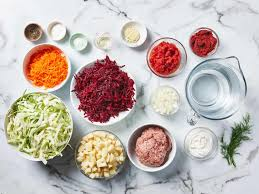

Ukrainian borscht is a vibrant, deeply flavorful beet soup. Known for its bright red color and sweet-and-sour profile, it is typically packed with shredded vegetables—such as cabbage, potatoes, carrots, and onions—and is simmered in a rich meat or vegetable broth. It is most iconic when topped with fresh dill and a generous dollop of sour cream
Ukrainian Borshch (not borscht, the Russian spelling) is a mildly tart vegetable soup made with a meat stock base. Borshch is symbolically significant to Ukrainians.
Ukrainian tradition does not recognize dinner without a soup or borsch. But it recognizes that borshch can be a one-pot meal for the entire family. There are countless varieties of borshch, depending on regional and personal preferences. The proportion of beets and other ingredients differs from region to region of Ukraine, which makes this soup redder in some or more orange in others. During Lent, borshch is meatless. Even with individual cooks, borshch differs from pot to pot depending on the vegetables and meat on hand.
Ingredients

3 medium beets
For meat stock:
680 g chuck steak
1 beef soup bone
8 cups water
1 smoked ham hock
1 bay leaf
6 black peppercorns
1 teaspoon salt
For soup:
1 small cabbage, shredded fine, about 4 cups (586 g)
3 small boiling potatoes
1 cup (170 g) great northern beans
2 tablespoon tomato paste
2 carrots
3 branches flat-leafed parsley stems
1 medium onion
2 strips bacon
1 tablespoon lemon juice
1 tablespoon sugar
2 cloves garlic
2 bay leaf
Steps
Cooking beets: Place unpeeled but scrubbed beets in a large pot and cover with cold water. Bring to boil.
Reduce heat to low and cook until tender,about 1 hour.Shred beets on coarse grater or julienne into strips. Set aside.
Preparing beef stock: Cut the chuck steak into 2-inch cubes. Add meat, soup bone and ham hock to a large stockpot with black peppercorns and 1 bay leaf, cover with water and simmer for 1 hour, skimming foam and fat from the surface of the stock. Add salt and cook until meat is tender, continuing to skim surface foam and fat. When meat is tender, strain stock. Cut meat off of ham hock, discarding skin, gristle and bone, and combine with cooked meat. Set meat aside. Discard soup bone. Reserve stock.
Preparing vegetables: Pour oil into a large skillet and add onion, carrot and parsley stems and sauté until crisp-tender. Set aside.
Assembling soup: Fry bacon, discarding all grease. Set aside. Pour homemade or purchased stock to clean stockpot. Heat to boiling over high heat, add shredded cabbage and reduce heat to medium. Cook for 10 minutes or until cabbage is crisp-tender. Reduce heat to simmer. Add potatoes and cook for 5 minutes. Then add meat, sautéed vegetables, bacon, tomato paste, remaining bay leaves, lemon juice, sugar and garlic and simmer for 15-20 minutes. Add beets and beans and reheat to simmer. (Do not boil as boiling will bleach the red color of the beets.)
Adjust salt, pepper and sugar. The soup should be pleasantly tart.
Serve in large soup bowls, placing a portion of meat and assorted vegetables in each with hot stock. Garnish with chopped parsley and dill. Serve sour cream on the side